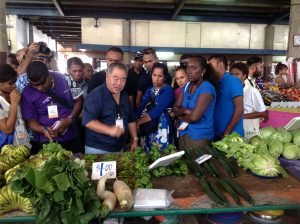

Sourcing Locally
What is local sourcing? How can it be successfully adopted by a business (farmer, agribusines, chef, restaurant, hotel...etc.)? What support is available to get started in or to support local sourcing? This page will address these questions and others.
What is local sourcing
Local sourcing typically denotes the sourcing, purchasing or procurement of food, ingredients and other consumable products from within a specific radius (distance) from where they will be used or sourced, or from a given geographical area. According to a USDA 2010 Study "There is no generally accepted definition of “local” food. Though “local” has a geographic connotation, there is no consensus on a definition in terms of the distance between production and consumption. Definitions related to geographic distance between production and sales vary by regions, companies, consumers, and local food markets." [1]
Demand for local sourcing is typically led by consumers, reflecting concerns around the freshness of food, the environmental impact of transporting food from large distances, the desire for an authentic food experience and other factors. In fact, "a 2012 Charleston|Orwig-sponsored research that found a majority of consumers had recently purchased locally sourced food. Interestingly, “local” was a more important consideration than “organic” and was cited as a key driver of “sustainability,” according to consumers surveyed last fall." [2] The same marketing company, Charleston|Orwig, found in a similar survey from 2013 that "interest in locally sourced foods is taking hold among consumers who equate “local” with “fresh” and “healthier” and who want to support their local economy."[2]
For farmers, producers, agribusinesses and the agricultural sector at large, the growth in demand for locally sourced food is an unmissable opportunity, particularly in island economies where local producers face many disadvantages. These include a the lack of economies of scale, dependence on a limited range of space and variety of products, and bearing greater expenses for agricultural inputs, which either have to be imported, and expensive transport and logistics.
Chefs and restaurateurs can work with farmers and local producers to take advantage of this momentum in favour of local sourcing. By building stronger networks between the food service businesses and agribusinesses, chefs and farmers can build stronger collaborative linkages with help farmers to improve the quality of their produce, for them to enter into new markets, and to better market and invest in their produce. At the same time, chefs are better able to source local ingredients of the standard, volume and frequency that they need, and can leverage their influence as trendsetters to promote local sourcing and innovate ways of presenting traditional foods and preparation techniques.
Sources:
[1] Local Food Systems: Concepts, Impacts, and Issues / ERR-97
Economic Research Service/USDA (2010)
http://bit.ly/1HxJJeP
[2] TheCattleSite News Desk (accessed Sept. 2016)
http://bit.ly/2d3n0tW

Source: http://www.thecropsite.com/

Source: http://www.thecropsite.com/
Don't Miss:

- Local sourcing can help to avoid revenue leakages from the tourism economy
- A new toolkit also promotes local sourcing as a way of reducing food waste in the tourism and hospitality industry
- Networks between chefs and farmers, suppliers and hotels are critical to enabling more food to be sourced local
- Enhanced linkages between tourism and agriculture present important opportunities for small island states
Support on sourcing locally

Additional Resources
- 'Chefs For Development: The Role of Chefs in Linking Agriculture to Tourism in the South Pacific'. 2016. CTA Download
- 'Eating from the farm: the social, environmental and economic benefits of local food systems'. 2015. Friends of the Earth Europe Download
- 'Local Food Systems: Concepts, Impacts, and Issues' / ERR-97 Economic Research Service/USDA. 2010. USDA Download